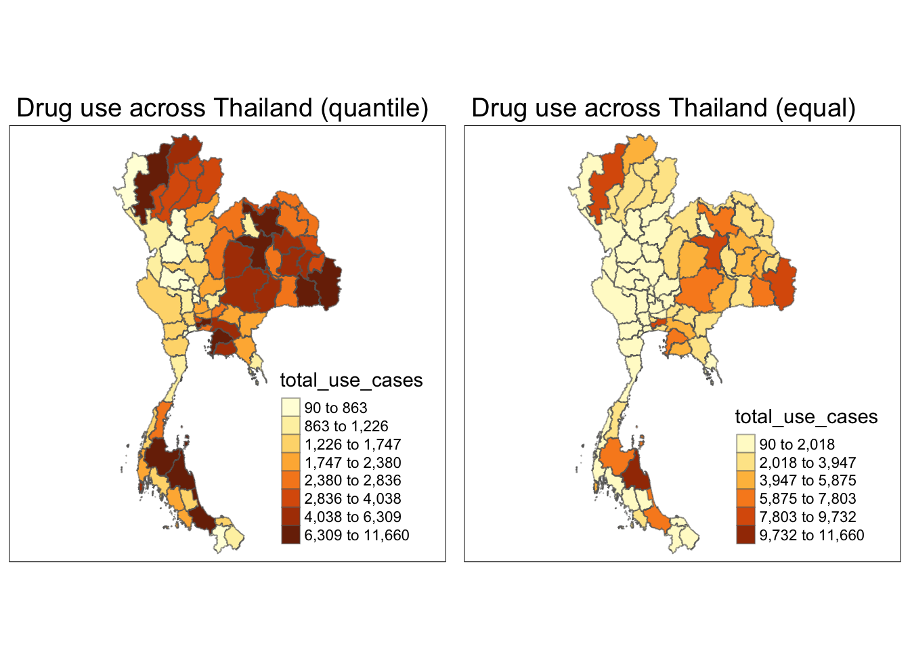
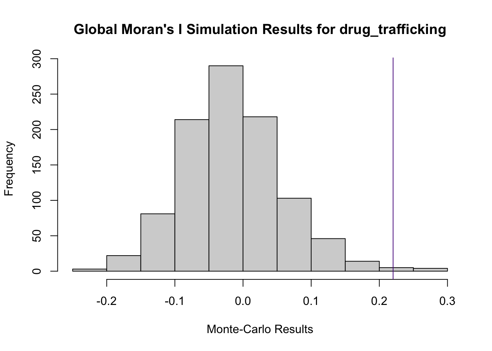
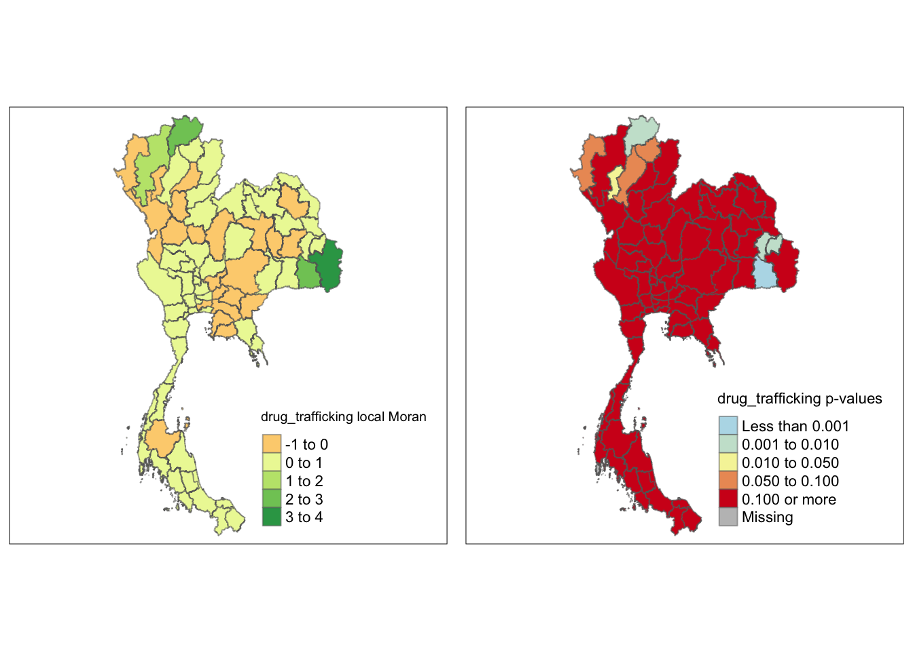
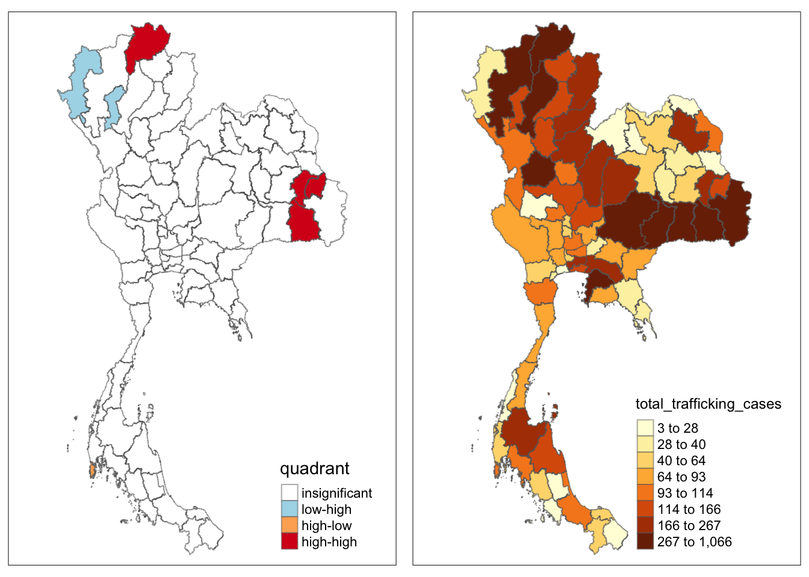

pacman::p_load(sf, raster, spatstat, sfdep, spdep, sparr, tmap, tidyverse, gridExtra, zoo, Kendall)TH2: Application of Geospatial Analysis Methods to Discover Thailand Drug Abuse at the Province Level
Take Home Exercise 2
TH2.1 Setting the Scene
Drug abuse brings with it significant negative health, financial and social consequences. Yet, illicit drug consumption remains highly prevalent and continues to be a growing problem worldwide. The UNODC has reported an increase in the number of people using illicit drugs to 292 million people worldwide in the decade leading up to 2022. Of these, 228 million people consumed cannabis, 60 million people consumed opiods, 30 million used amphetamines, 23 million used cocaine and 20 million took ecstasy. Further, they found an increase in overdose deaths following the emergence of nitazenes, which is a group of synthetic opioids potentially more dangerous than fentanyl – in several high-income countries. (World Drug Day Report Highlights Spike in Drug Use, Increased Trafficking | UN News, 2024).
The aim of today’s study is to discover:
- How the trend of drug offences in Thailand varied over the past 6 years,
- If the key indicators of drug abuse and trafficking in Thailand are independent from space,
- If the indicators of drug abuse and trafficking are indeed spatially-dependent, and if so, where the clusters, outliers and hotspots are located.
TH2.2 The Drug Problem in Thailand
Thailand (2024 GDP per capita - PPP: $23,401; Gini coefficient: 35.1 - medium; HDI: 0.083 - very high) (International Monetary Fund, 2024) (World Bank, n.d.) (United Nations Development Programme, 2024) is located in close proximity to the Golden Triangle, which comprises the northern part of the country along with northeastern Myanmar and northern Laos. In 2021, its drug trafficking situation remained critical, with 337,186 drug cases in total. While seizures of ketamine decreased between 2020 and 2021, seizures of methamphetamine, ice and heroin increased in the same period, with heroin seeing the biggest increase from 1873kg in 2020 to 4520kg in 2021 (Kanato et al., 2022). Considering that the COVID-19 pandemic - which caused a global economic depression among other socio-economic effects - occurred around this time, it can be theorised that those who encountered economic hardship as a result of the pandemic might turn to drug trafficking to support themselves and their families.
The maximum penalty for drug trafficking in Thailand, as is neighbouring Laos, Malaysia and Singapore, is death (Thailand, n.d.). Despite this, smugglers have innovated on new routes through the northern and northeastern borders of the country, and even go so far as to hide shipments in cargo vessels bound for the likes of Singapore, New Zealand, Australia and South Korea. 575 smuggling cases by sea occurred in 2021, in which 4554kg of heroin, 2.4 times more than the previous year, were seized (Kanato et al., 2022).
Drug use in the country is as problematic. In 2018, 39% of Thais aged between 15 and 24 were involved in illicit drugs. Of youth aged between 15 and 19, there are 300000 who need treatment, and a significant majority attend vocational schools (as opposed to grade schools). Kongjareon et al. (2022) found in a study of 638 students in four vocational schools, that 11.3% reported poly-drug use. Among LGBT students this figure was 20.2%, and among hetrosexual students 9.8%. Factors contributing to the former’s use of drugs include, among other things, counselling needs, intoxicated sex and GPA.
TH2.3 Importing data and R packages
The R packages we will use today are:
sfKendallfor computing Kendall rank correction and Mann-Kendall trend testtmapspatstatsfdepandspdepfor measures of spatial autocorrelation, andsparr
We will be examining a dataset of drug offences in Thailand between 2017 and 2022 retrieved from Kaggle, superimposed against the provincial boundaries of the country. This dataset encompasses a number of drug offence categories, from usage to trafficking and posession and export.
thailand <- st_read(dsn="data/geospatial", layer="tha_admbnda_adm1_rtsd_20220121") %>% st_transform(crs = 4326)Reading layer `tha_admbnda_adm1_rtsd_20220121' from data source
`/Users/kendricktty/Gits/smu_cs/is415-site/TakeHome/TakeHome2/data/geospatial'
using driver `ESRI Shapefile'
Simple feature collection with 77 features and 16 fields
Geometry type: MULTIPOLYGON
Dimension: XY
Bounding box: xmin: 97.34336 ymin: 5.613038 xmax: 105.637 ymax: 20.46507
Geodetic CRS: WGS 84thailandSimple feature collection with 77 features and 16 fields
Geometry type: MULTIPOLYGON
Dimension: XY
Bounding box: xmin: 97.34336 ymin: 5.613038 xmax: 105.637 ymax: 20.46507
Geodetic CRS: WGS 84
First 10 features:
Shape_Leng Shape_Area ADM1_EN ADM1_TH ADM1_PCODE
1 2.417227 0.13133873 Bangkok กรุงเทพมหานคร TH10
2 1.695100 0.07926199 Samut Prakan สมุทรปราการ TH11
3 1.251111 0.05323766 Nonthaburi นนทบุรี TH12
4 1.884945 0.12698345 Pathum Thani ปทุมธานี TH13
5 3.041716 0.21393797 Phra Nakhon Si Ayutthaya พระนครศรีอยุธยา TH14
6 1.739908 0.07920961 Ang Thong อ่างทอง TH15
7 5.693342 0.54578838 Lop Buri ลพบุรี TH16
8 1.778326 0.06872655 Sing Buri สิงห์บุรี TH17
9 2.896316 0.20907828 Chai Nat ชัยนาท TH18
10 4.766446 0.29208711 Saraburi สระบุรี TH19
ADM1_REF ADM1ALT1EN ADM1ALT2EN ADM1ALT1TH ADM1ALT2TH ADM0_EN ADM0_TH
1 <NA> <NA> <NA> <NA> <NA> Thailand ประเทศไทย
2 <NA> <NA> <NA> <NA> <NA> Thailand ประเทศไทย
3 <NA> <NA> <NA> <NA> <NA> Thailand ประเทศไทย
4 <NA> <NA> <NA> <NA> <NA> Thailand ประเทศไทย
5 <NA> <NA> <NA> <NA> <NA> Thailand ประเทศไทย
6 <NA> <NA> <NA> <NA> <NA> Thailand ประเทศไทย
7 <NA> <NA> <NA> <NA> <NA> Thailand ประเทศไทย
8 <NA> <NA> <NA> <NA> <NA> Thailand ประเทศไทย
9 <NA> <NA> <NA> <NA> <NA> Thailand ประเทศไทย
10 <NA> <NA> <NA> <NA> <NA> Thailand ประเทศไทย
ADM0_PCODE date validOn validTo geometry
1 TH 2019-02-18 2022-01-22 <NA> MULTIPOLYGON (((100.6139 13...
2 TH 2019-02-18 2022-01-22 <NA> MULTIPOLYGON (((100.7306 13...
3 TH 2019-02-18 2022-01-22 <NA> MULTIPOLYGON (((100.3415 14...
4 TH 2019-02-18 2022-01-22 <NA> MULTIPOLYGON (((100.8916 14...
5 TH 2019-02-18 2022-01-22 <NA> MULTIPOLYGON (((100.5131 14...
6 TH 2019-02-18 2022-01-22 <NA> MULTIPOLYGON (((100.3332 14...
7 TH 2019-02-18 2022-01-22 <NA> MULTIPOLYGON (((101.3453 15...
8 TH 2019-02-18 2022-01-22 <NA> MULTIPOLYGON (((100.3691 15...
9 TH 2019-02-18 2022-01-22 <NA> MULTIPOLYGON (((100.1199 15...
10 TH 2019-02-18 2022-01-22 <NA> MULTIPOLYGON (((101.3994 15...thailand_drug <- read_csv("data/aspatial/thai_drug_offenses_2017_2022.csv")Rows: 7392 Columns: 5
── Column specification ────────────────────────────────────────────────────────
Delimiter: ","
chr (3): types_of_drug_offenses, province_th, province_en
dbl (2): fiscal_year, no_cases
ℹ Use `spec()` to retrieve the full column specification for this data.
ℹ Specify the column types or set `show_col_types = FALSE` to quiet this message.thailand_drug# A tibble: 7,392 × 5
fiscal_year types_of_drug_offenses no_cases province_th province_en
<dbl> <chr> <dbl> <chr> <chr>
1 2017 drug_use_cases 11871 กรุงเทพมหานคร Bangkok
2 2017 drug_use_cases 200 ชัยนาท Chai Nat
3 2017 drug_use_cases 553 นนทบุรี Nonthaburi
4 2017 drug_use_cases 450 ปทุมธานี Pathum Thani
5 2017 drug_use_cases 378 พระนครศรีอยุธยา Phra Nakhon Si Ayu…
6 2017 drug_use_cases 727 ลพบุรี Loburi
7 2017 drug_use_cases 820 สมุทรปราการ Samut Prakan
8 2017 drug_use_cases 69 สระบุรี Saraburi
9 2017 drug_use_cases 127 สิงห์บุรี Sing Buri
10 2017 drug_use_cases 208 อ่างทอง Ang Thong
# ℹ 7,382 more rowsTH2.3.1 Data Cleansing
There are discrepancies in the spelling of the province names between the shapefile and drug offence data, and R does not appear to support table joins if the values are not in English (which means a join by their Thai names is not possible). The only way to ensure all data is accounted for correctly later is to update the names of provinces in the drug offence table so that they match those in the shapefile - otherwise, the provinces with name mismatches will be reflected as missing data. Luckily, only 2 provinces have name mismatches: Bueng Kan and Lop Buri.
thailand_drug <- thailand_drug %>%
mutate(province_en = case_when(
province_en %in% c("buogkan") ~ "Bueng Kan",
province_en %in% c("Loburi") ~ "Lop Buri",
TRUE ~ province_en
))TH2.4 Exploratory Data Analysis
The code chunk below prints the total number of each unique type of drug offence cases.
thailand_drug_analysis <- thailand_drug %>%
group_by(types_of_drug_offenses) %>%
summarise(total_cases = sum(no_cases)) %>% ungroup()
thailand_drug_analysis# A tibble: 16 × 2
types_of_drug_offenses total_cases
<chr> <dbl>
1 conspiracy_cases 920
2 drug_use_cases 915529
3 export_cases 84
4 import_cases 860
5 possession_cases 538893
6 possession_with_intent_to_distribute_cases 341283
7 production_cases 56892
8 suspects_in_conspiracy_cases 2332
9 suspects_in_drug_use_cases 930768
10 suspects_in_export_cases 102
11 suspects_in_import_cases 1066
12 suspects_in_possession_cases 566999
13 suspects_in_possession_with_intent_to_distribute_cases 386946
14 suspects_in_production_cases 66247
15 suspects_in_trafficking_cases 79997
16 trafficking_cases 68379There are a total of 8 different types of cases, with another 8 unique values dedicated to suspected instances of cases.
We are particularly interested in drug use and trafficking cases, so we will now attempt to plot the changes in the number of each type of case between 2017 and 2022. This analysis will help us select study periods to analyse later.
TH2.4.1 Plotting changes in drug trafficking cases by time
thailand_drug_trafficking <- thailand_drug %>% filter(types_of_drug_offenses %in% c("trafficking_cases", "suspects_in_trafficking_cases", "possession_with_intent_to_distribute_cases", "suspects_in_possession_with_intent_to_distribute_cases")) %>%
group_by(fiscal_year) %>%
summarise(total_cases = sum(no_cases[types_of_drug_offenses == "trafficking_cases"]),
total_suspect_cases = sum(no_cases[types_of_drug_offenses == "suspects_in_trafficking_cases"]),
total_posession_intent_cases = sum(no_cases[types_of_drug_offenses == "possession_with_intent_to_distribute_cases"]),
total_suspect_posession_intent_cases = sum(no_cases[types_of_drug_offenses == "suspects_in_possession_with_intent_to_distribute_cases"])) %>%
ungroup()
thailand_drug_trafficking# A tibble: 6 × 5
fiscal_year total_cases total_suspect_cases total_posession_intent_cases
<dbl> <dbl> <dbl> <dbl>
1 2017 13089 15603 55644
2 2018 12034 14630 64205
3 2019 11366 13498 63194
4 2020 12248 13918 67014
5 2021 10847 12395 68681
6 2022 8795 9953 22545
# ℹ 1 more variable: total_suspect_posession_intent_cases <dbl>ggplot(data = thailand_drug_trafficking, aes(x = fiscal_year)) +
geom_line(aes(y = total_cases, color = "trafficking_cases"), size = 1) +
geom_point(aes(y = total_cases, color = "trafficking_cases"), size = 2) +
geom_line(aes(y = total_suspect_cases, color = "suspects_in_trafficking_cases"), size = 1) +
geom_point(aes(y = total_suspect_cases, color = "suspects_in_trafficking_cases"), size = 2) +
labs(title = "Trafficking Cases and Suspects",
x = "Year",
y = "Number of cases") +
scale_color_manual(values = c("trafficking_cases" = "purple3", "suspects_in_trafficking_cases" = "plum")) +
theme_minimal() +
theme(legend.position = "bottom",
legend.justification = "right") +
guides(color = guide_legend(title = "Legend"))Warning: Using `size` aesthetic for lines was deprecated in ggplot2 3.4.0.
ℹ Please use `linewidth` instead.
ggplot(data = thailand_drug_trafficking, aes(x = fiscal_year)) +
geom_line(aes(y = total_posession_intent_cases, color = "possession_with_intent_to_distribute_cases"), size = 1) +
geom_point(aes(y = total_posession_intent_cases, color = "possession_with_intent_to_distribute_cases"), size = 2) +
geom_line(aes(y = total_suspect_posession_intent_cases, color = "suspects_in_possession_with_intent_to_distribute_cases"), size = 1) +
geom_point(aes(y = total_suspect_posession_intent_cases, color = "suspects_in_possession_with_intent_to_distribute_cases"), size = 2) +
labs(title = "Possession with Intent to Distribute Cases and Suspects",
x = "Year",
y = "Number of cases") +
scale_color_manual(values = c("possession_with_intent_to_distribute_cases" = "black",
"suspects_in_possession_with_intent_to_distribute_cases" = "gray")) +
theme_minimal() +
theme(legend.position = "bottom",
legend.justification = "right") +
guides(color = guide_legend(title = "Legend"))# grid.arrange(plot1, plot2, ncol = 2)The number of trafficking cases generally trended downwards between 2017 and 2022, though there was a momentary increase between 2019 and 2020. Meanwhile the number of posession cases with intent to distribute rose steadily until 2021, before plunging in 2022.
TH2.4.2 Plotting changes in drug use cases by time
thailand_drug_trafficking <- thailand_drug %>% filter(types_of_drug_offenses %in% c("drug_use_cases", "suspects_in_drug_use_cases", "possession_cases", "suspects_in_possession_cases")) %>%
group_by(fiscal_year) %>%
summarise(total_use_cases = sum(no_cases[types_of_drug_offenses == "drug_use_cases"]),
total_suspect_use_cases = sum(no_cases[types_of_drug_offenses == "suspects_in_drug_use_cases"]),
total_posession_cases = sum(no_cases[types_of_drug_offenses == "possession_cases"]),
total_suspect_posession_cases = sum(no_cases[types_of_drug_offenses == "suspects_in_possession_cases"])) %>%
ungroup()
thailand_drug_trafficking# A tibble: 6 × 5
fiscal_year total_use_cases total_suspect_use_cases total_posession_cases
<dbl> <dbl> <dbl> <dbl>
1 2017 91444 93895 90845
2 2018 146761 150049 100941
3 2019 177078 179823 104365
4 2020 141570 141761 87997
5 2021 231406 235803 93976
6 2022 127270 129437 60769
# ℹ 1 more variable: total_suspect_posession_cases <dbl>ggplot(data = thailand_drug_trafficking, aes(x = fiscal_year)) +
# geom_bar(stat = "identity", fill = "red4") +
geom_line(aes(x = fiscal_year, y = total_use_cases, color = "drug_use"), size = 1) + geom_point(aes(x = fiscal_year, y = total_use_cases, color = "drug_use"), size = 2) +
geom_line(aes(x = fiscal_year, y = total_suspect_use_cases, color = "suspects_in_drug_use_cases"), size = 1) + geom_point(aes(x = fiscal_year, y = total_suspect_use_cases, color = "suspects_in_drug_use_cases"), size = 2) +
geom_line(aes(x = fiscal_year, y = total_posession_cases, color = "possession_cases"), size = 1) + geom_point(aes(x = fiscal_year, y = total_posession_cases, color = "possession_cases"), size = 2) +
geom_line(aes(x = fiscal_year, y = total_suspect_posession_cases, color = "suspects_in_possession_cases"), size = 1) + geom_point(aes(x = fiscal_year, y = total_suspect_posession_cases, color = "suspects_in_possession_cases"), size = 2) +
labs(title = "Drug use and suspected cases by year",
x = "Year",
y = "Number of cases") +
scale_color_manual(values = c("drug_use" = "skyblue1", "suspects_in_drug_use_cases" = "green3", "possession_cases" = "red2", "suspects_in_possession_cases" = "yellow3")) +
theme_minimal() +
theme(legend.position = "bottom") +
guides(color = guide_legend(title = "Legend"))There was a spike in the number of drug use cases in 2021 in an otherwise variable set of data. Meanwhile, drug possession cases generally declined after 2019, though there was a slight increase in 2021.
From both analysis steps, it makes sense to select the drug use cases trafficking cases in 2021 for further analysis. The year 2021 coincided with a rise in the country’s unemployment rate to 1.2% from 0.7% two years prior (World Bank Open Data, n.d.), as the Thai economy was still recovering from the COVID-19 pandemic. Unemployment increases susceptibility to, among other negative effects, drug use.
TH2.4.3 Creating filtered table for 2021 observations
The following code chunks create a filtered table for the confirmed drug use and trafficking observations that occurred in 2021, groups and summarises them by province, and plots the numbers onto the provincial map of Thailand.
thailand_2021_drug <- thailand_drug %>%
filter(fiscal_year == "2021") %>%
filter(types_of_drug_offenses %in% c("drug_use_cases", "trafficking_cases")) %>%
group_by(province_en) %>%
summarise(total_use_cases = sum(no_cases[types_of_drug_offenses == "drug_use_cases"]),
total_trafficking_cases = sum(no_cases[types_of_drug_offenses == "trafficking_cases"])) %>%
ungroup()
thailand_2021_drug# A tibble: 77 × 3
province_en total_use_cases total_trafficking_cases
<chr> <dbl> <dbl>
1 Amnat Charoen 3012 164
2 Ang Thong 755 51
3 Bangkok 9625 250
4 Bueng Kan 2705 20
5 Buri Ram 5110 399
6 Chachoengsao 4111 197
7 Chai Nat 763 97
8 Chaiyaphum 4620 181
9 Chanthaburi 2200 31
10 Chiang Mai 8623 640
# ℹ 67 more rowsthailand_2021 <- left_join(thailand, thailand_2021_drug, by = c("ADM1_EN" = "province_en"))
thailand_2021Simple feature collection with 77 features and 18 fields
Geometry type: MULTIPOLYGON
Dimension: XY
Bounding box: xmin: 97.34336 ymin: 5.613038 xmax: 105.637 ymax: 20.46507
Geodetic CRS: WGS 84
First 10 features:
Shape_Leng Shape_Area ADM1_EN ADM1_TH ADM1_PCODE
1 2.417227 0.13133873 Bangkok กรุงเทพมหานคร TH10
2 1.695100 0.07926199 Samut Prakan สมุทรปราการ TH11
3 1.251111 0.05323766 Nonthaburi นนทบุรี TH12
4 1.884945 0.12698345 Pathum Thani ปทุมธานี TH13
5 3.041716 0.21393797 Phra Nakhon Si Ayutthaya พระนครศรีอยุธยา TH14
6 1.739908 0.07920961 Ang Thong อ่างทอง TH15
7 5.693342 0.54578838 Lop Buri ลพบุรี TH16
8 1.778326 0.06872655 Sing Buri สิงห์บุรี TH17
9 2.896316 0.20907828 Chai Nat ชัยนาท TH18
10 4.766446 0.29208711 Saraburi สระบุรี TH19
ADM1_REF ADM1ALT1EN ADM1ALT2EN ADM1ALT1TH ADM1ALT2TH ADM0_EN ADM0_TH
1 <NA> <NA> <NA> <NA> <NA> Thailand ประเทศไทย
2 <NA> <NA> <NA> <NA> <NA> Thailand ประเทศไทย
3 <NA> <NA> <NA> <NA> <NA> Thailand ประเทศไทย
4 <NA> <NA> <NA> <NA> <NA> Thailand ประเทศไทย
5 <NA> <NA> <NA> <NA> <NA> Thailand ประเทศไทย
6 <NA> <NA> <NA> <NA> <NA> Thailand ประเทศไทย
7 <NA> <NA> <NA> <NA> <NA> Thailand ประเทศไทย
8 <NA> <NA> <NA> <NA> <NA> Thailand ประเทศไทย
9 <NA> <NA> <NA> <NA> <NA> Thailand ประเทศไทย
10 <NA> <NA> <NA> <NA> <NA> Thailand ประเทศไทย
ADM0_PCODE date validOn validTo total_use_cases
1 TH 2019-02-18 2022-01-22 <NA> 9625
2 TH 2019-02-18 2022-01-22 <NA> 2515
3 TH 2019-02-18 2022-01-22 <NA> 3202
4 TH 2019-02-18 2022-01-22 <NA> 1747
5 TH 2019-02-18 2022-01-22 <NA> 1766
6 TH 2019-02-18 2022-01-22 <NA> 755
7 TH 2019-02-18 2022-01-22 <NA> 1925
8 TH 2019-02-18 2022-01-22 <NA> 683
9 TH 2019-02-18 2022-01-22 <NA> 763
10 TH 2019-02-18 2022-01-22 <NA> 1106
total_trafficking_cases geometry
1 250 MULTIPOLYGON (((100.6139 13...
2 159 MULTIPOLYGON (((100.7306 13...
3 60 MULTIPOLYGON (((100.3415 14...
4 106 MULTIPOLYGON (((100.8916 14...
5 112 MULTIPOLYGON (((100.5131 14...
6 51 MULTIPOLYGON (((100.3332 14...
7 142 MULTIPOLYGON (((101.3453 15...
8 40 MULTIPOLYGON (((100.3691 15...
9 97 MULTIPOLYGON (((100.1199 15...
10 69 MULTIPOLYGON (((101.3994 15...use_map <- tm_shape(thailand_2021) + tm_fill("total_use_cases", n = 8, style = "quantile") + tm_borders(alpha = 0.5)
use_map_equal <- tm_shape(thailand_2021) + tm_fill("total_use_cases", n = 6, style = "equal") + tm_borders(alpha = 0.5)
tmap_arrange(use_map + tm_layout(main.title = "Drug use across Thailand (quantile)", main.title.size = 1.2, frame = TRUE), use_map_equal + tm_layout(main.title = "Drug use across Thailand (equal)", main.title.size = 1.2, frame = TRUE), asp = 1, ncol = 2)
Considering only confirmed cases of use and trafficking (and ignoring suspected ones), the provinces with the highest number of drug use cases appear clustered to the northeast, around Sakon Nakhon, and north, around Chiang Mai and Chiang Rai. Both these general regions are either within, or in close proximity to, the Golden Triangle that also encompasses northern Laos and northeastern Myanmar. There are also pockets of high use around the capital Bangkok near the Gulf of Thailand, and the southern provinces including Songkhla province on the border with Kedah, Malaysia, and the resort island province of Phuket. Surprisingly, provinces such as Kanchanaburi and Sing Buri, which are also close to the Golden Triangle, see relatively muted drug use.
trafficking_map <- tm_shape(thailand_2021) + tm_fill("total_trafficking_cases", n = 8, style = "quantile") + tm_borders(alpha = 0.5)
trafficking_map_equal <- tm_shape(thailand_2021) + tm_fill("total_trafficking_cases", n = 6, style = "equal") + tm_borders(alpha = 0.5)
tmap_arrange(trafficking_map + tm_layout(main.title = "Drug trafficking across Thailand (quantile)", main.title.size = 1, frame = TRUE), trafficking_map_equal + tm_layout(main.title = "Drug trafficking across Thailand (equal)", main.title.size = 1, frame = TRUE), asp = 1, ncol = 2)This same general region in the north-northeast also sees the highest concentration of drug trafficking cases throughout the country, with the eastern province of Ubon Ratchatani seeing the largest number of all. The further south within the country, the lower the concentration of drug cases, with one notable anomaly being Surat Thani Province, which contains another resort island - Koh Samui.
We will now proceed to rigourously verify these observations using global and local spatial autocorrelation techniques, such as global and local Moran’s I, Geary’s C and G-statistics. In particular, we want to verify if the indicators of drug abuse are indeed spatially dependent, i.e. provinces that see less drug use are clustered with one another and vice-versa, and if so, whether the high-concentration areas identified in the choropleth maps above are indeed hot spots.
TH2.5 Deriving Global Measures of Spatial Autocorrelation
Tobler’s (1970) first law of geography states that everything is related to everything else, but near things are more related than distant things. Spatial autocorrelation seeks to determine the extent of Tobler’s first law on a variable or measurement - in our case, the number of drug use and drug trafficking cases. As the illustration below (Khant, 2024) (Moraga, 2023) shows, positive spatial autocorrelation is when adjacent observations have similar data values. In contrast, negative spatial autocorrelation is when adjacent observations have contrasting values, and when the data values appear randomly distributed, no spatial autocorrelation occurs.
We will first focus on the global measures of spatial autocorrelation: Moran’s I and Geary’s C. While both seek to determine if the measured variables (in this case, our drug use and drug trafficking statistics) are clustered, dispersed or random, the former looks at the study area as a whole, and the latter quantifies how different each subdivision (province) is different from its immediate neighbours.
TH2.5.1 Data Preparation - Spatial Weights
Before computing any global spatial autocorrelation statistics, we first need to construct the spatial weights of the study area. The first step in doing so will be to compute the queen contiguity spatial weights. This means we will consider all neighbours for each province that share an edge and vertex, i.e. are horizontally, vertically and diagonally adjacent.
We will create 2 row-standardised spatial weights matrices for confirmed cases only - one for our drug use statistics and another for our drug trafficking statistics. Row-standardisation will take the inverse of the number of neighbours each province has, as derived from our vanilla queen contiguity spatial weights matrix.
thailand_2021_use <- thailand_2021 %>% select(1:3, 17)
thailand_2021_trafficking <- thailand_2021 %>% select(1:3, 18)
wm_q_use <- poly2nb(thailand_2021_use, queen=TRUE)
wm_q_tr <- poly2nb(thailand_2021_trafficking, queen=TRUE)print("Weights matrix for drug use cases")[1] "Weights matrix for drug use cases"summary(wm_q_use)Neighbour list object:
Number of regions: 77
Number of nonzero links: 352
Percentage nonzero weights: 5.93692
Average number of links: 4.571429
1 region with no links:
67
2 disjoint connected subgraphs
Link number distribution:
0 1 2 3 4 5 6 7 8 9
1 1 5 17 15 17 10 5 4 2
1 least connected region:
14 with 1 link
2 most connected regions:
29 51 with 9 linksprint("Weights matrix for drug trafficking cases")[1] "Weights matrix for drug trafficking cases"summary(wm_q_tr)Neighbour list object:
Number of regions: 77
Number of nonzero links: 352
Percentage nonzero weights: 5.93692
Average number of links: 4.571429
1 region with no links:
67
2 disjoint connected subgraphs
Link number distribution:
0 1 2 3 4 5 6 7 8 9
1 1 5 17 15 17 10 5 4 2
1 least connected region:
14 with 1 link
2 most connected regions:
29 51 with 9 linksrswm_q_use <- nb2listw(wm_q_use, style = "W", zero.policy = TRUE)
rswm_q_tr <- nb2listw(wm_q_tr, style = "W", zero.policy = TRUE)Characteristics of weights list object:
Neighbour list object:
Number of regions: 77
Number of nonzero links: 352
Percentage nonzero weights: 5.93692
Average number of links: 4.571429
1 region with no links:
67
2 disjoint connected subgraphs
Weights style: W
Weights constants summary:
n nn S0 S1 S2
W 76 5776 76 36.26113 315.652Characteristics of weights list object:
Neighbour list object:
Number of regions: 77
Number of nonzero links: 352
Percentage nonzero weights: 5.93692
Average number of links: 4.571429
1 region with no links:
67
2 disjoint connected subgraphs
Weights style: W
Weights constants summary:
n nn S0 S1 S2
W 76 5776 76 36.26113 315.652We will also define our null and alternative hypotheses as such:
- **Null Hypotheses \(H_0_\): the tests indicate no spatial autocorrelation:
- For Moran’s I: \(H_0_: I = E[I] = 0\), and;
- For Geary’s C:
- **Alternative Hypotheses
TH2.5.2 Moran’s I
With our matrices constructed, we can calculate our global spatial correlation statistics. Moran’s I describes how features differ from the values in the study area as a whole. It approaches 1 when similar values are clustered, and approaches -1 when dissimilar values tend to cluster.
The code chunk below computes Moran’s I on our drug use dataset, subsequently performing a Monte Carlo test and plotting the result in a histogram. We can use the histogram to visualise the permutation results and compare them to the expected value under null hypothesis.
TH2.5.2.1 Moran’s I on drug_use statistics
moran.test(thailand_2021$total_use_cases, listw=rswm_q_use, zero.policy = TRUE, na.action=na.omit)
Moran I test under randomisation
data: thailand_2021$total_use_cases
weights: rswm_q_use
n reduced by no-neighbour observations
Moran I statistic standard deviate = 2.862, p-value = 0.002105
alternative hypothesis: greater
sample estimates:
Moran I statistic Expectation Variance
0.20376109 -0.01333333 0.00575372 set.seed(1234)
bperm_use <- moran.mc(thailand_2021$total_use_cases,
listw=rswm_q_use,
nsim=999,
zero.policy = TRUE,
na.action=na.omit)
bperm_use
Monte-Carlo simulation of Moran I
data: thailand_2021$total_use_cases
weights: rswm_q_use
number of simulations + 1: 1000
statistic = 0.20376, observed rank = 993, p-value = 0.007
alternative hypothesis: greaterhist(bperm_use$res, main = "Global Moran's I Simulation Results for drug_use", xlab="Monte-Carlo Results", ylab="Frequency")
abline(v = bperm_use$statistic, col = "green4")From the output above:
- The Moran’s I statistic is approximately
0.20, which is significantly higher than the expected value of-0.014. This is a significant indicator of positive spatial autocorrelation, but only to a moderate degree. - With a standard deviation of
2.86and p-value of0.0021 < 0.05at a 95% confidence level, the test result is statistically significant. We can reject the null hypothesis of a lack of spatial autocorrelation. - After 1000 permutations, we get a similar Moran’s I observation of
0.2038, with a p-value of0.007. Therefore, our result is stable and statistically significant.
This shows that provinces with high drug use in Thailand can, to a limited extent, be near one another.
TH2.5.2.2 Moran’s I on drug_trafficking statistics
moran.test(thailand_2021$total_trafficking_cases, listw=rswm_q_tr, zero.policy = TRUE, na.action=na.omit)
Moran I test under randomisation
data: thailand_2021$total_trafficking_cases
weights: rswm_q_tr
n reduced by no-neighbour observations
Moran I statistic standard deviate = 3.3324, p-value = 0.0004304
alternative hypothesis: greater
sample estimates:
Moran I statistic Expectation Variance
0.22018889 -0.01333333 0.00491054 set.seed(1234)
bperm_tr <- moran.mc(thailand_2021$total_trafficking_cases,
listw=rswm_q_tr,
nsim=999,
zero.policy = TRUE,
na.action=na.omit)
bperm_tr
Monte-Carlo simulation of Moran I
data: thailand_2021$total_trafficking_cases
weights: rswm_q_tr
number of simulations + 1: 1000
statistic = 0.22019, observed rank = 998, p-value = 0.002
alternative hypothesis: greaterhist(bperm_use$res, main = "Global Moran's I Simulation Results for drug_trafficking", xlab="Monte-Carlo Results", ylab="Frequency")
abline(v = bperm_tr$statistic, col = "purple4")
The output for our drug_trafficking statistics is similar to that for our drug_use statistics, and can be interpreted as follows:
- The Moran’s I statistic is approximately
0.22, which is significantly higher than the expected value of-0.014. This value is close to that obtained from ourdrug_usestatistics, which indicates that both categories of drug crimes are similarly and moderately clustered. - With a standard deviation of
3.33and p-value of0.0004 < 0.05at a 95% confidence level, the test result is statistically significant. We can reject the null hypothesis of a lack of spatial autocorrelation. - After 1000 permutations, we get a similar Moran’s I observation of
0.21947, with a p-value of0.002. Therefore, our result is stable and statistically significant.
Like drug use, using Moran’s I show that provinces with high drug trafficking in Thailand can, to a limited extent, be near one another.
TH2.6 Geary’s C
Geary’s C is another measure of global spatial autocorrelation that describes how features differ from their immediate neighbours. When C > 1, the points are dispersed, and while C < 1, the points are clustered. A C value of 1 indicates observations are randomly arranged in space. Geary’s C approaches 0 when similar values are clustered, and approaches 3 when dissimilar values are clustered. Geary’s C is inversely proportional to Moran’s I, so higher Cs correspond to lower Is.
Just as before, we will now perform Geary’s C on both our drug_use and drug_trafficking statistics.
TH2.6.1 Geary’s C on drug_use statistics
geary.test(thailand_2021$total_use_cases, listw=rswm_q_use, zero.policy = TRUE, na.action = na.omit)
Geary C test under randomisation
data: thailand_2021$total_use_cases
weights: rswm_q_use
n reduced by no-neighbour observations
Geary C statistic standard deviate = 1.8151, p-value = 0.03476
alternative hypothesis: Expectation greater than statistic
sample estimates:
Geary C statistic Expectation Variance
0.843832653 1.000000000 0.007402704 set.seed(1234)
bperm_use <- geary.mc(thailand_2021$total_use_cases,
listw=rswm_q_use,
nsim=999,
zero.policy = TRUE,
na.action = na.omit)
bperm_use
Monte-Carlo simulation of Geary C
data: thailand_2021$total_use_cases
weights: rswm_q_use
number of simulations + 1: 1000
statistic = 0.84383, observed rank = 61, p-value = 0.061
alternative hypothesis: greaterhist(bperm_use$res, main = "Geary's C Simulation Results for drug_use", xlab="Monte-Carlo Results", ylab="Frequency")
abline(v = bperm_use$statistic, col = "green4")From the output above:
- The Geary’s C statistic is approximately
0.84, which is lower than the expected value of1.0. Just as a high Moran’s I indicates positive spatial correlation, our Geary’s C statistic, which is less than1, indicates likewise. Similarly to the conclusion of our Moran’s I investigation, the Geary’s C statistic only indicates moderate positive spatial correlation. - With a standard deviation of
3.24 and p-value of0.035 < 0.05`, the test result is statistically significant. If we were to only run the test once, we should be able to reject the null hypothesis of a lack of spatial autocorrelation. - However, while running 1000 permutations yielded a similar Geary’s C observation of
0.84383, this time, our p-value of0.061is greater than our threshold of0.05at the 95% confidence level. Had we only used Geary’s C, we would not have strong statistical evidence to reject our null hypothesis.
Hence, the Geary’s C statistic on drug use cases in 2021 yielded inconclusive results.
TH2.6.2 Geary’s C on drug_trafficking statistics
geary.test(thailand_2021$total_trafficking_cases, listw=rswm_q_tr, zero.policy = TRUE, na.action = na.omit)
Geary C test under randomisation
data: thailand_2021$total_trafficking_cases
weights: rswm_q_tr
n reduced by no-neighbour observations
Geary C statistic standard deviate = 2.3998, p-value = 0.008202
alternative hypothesis: Expectation greater than statistic
sample estimates:
Geary C statistic Expectation Variance
0.73939266 1.00000000 0.01179295 set.seed(1234)
bperm_tr <- geary.mc(thailand_2021$total_trafficking_cases,
listw=rswm_q_tr,
nsim=999, zero.policy = TRUE, na.action = na.omit)
bperm_tr
Monte-Carlo simulation of Geary C
data: thailand_2021$total_trafficking_cases
weights: rswm_q_tr
number of simulations + 1: 1000
statistic = 0.73939, observed rank = 20, p-value = 0.02
alternative hypothesis: greaterhist(bperm_use$res, main = "Global Geary's C Simulation Results for drug_trafficking", xlab="Monte-Carlo Results", ylab="Frequency")
abline(v = bperm_tr$statistic, col = "purple4")When Geary’s C is run on the drug_trafficking statistics:
- The result yielded is approximately
0.74, which is lower than the expected value of1.0. It is also lower than the Geary’s C for the drug use data, which indicates that the clustering of drug trafficking hotspots is stronger than that for drug use. - With a standard deviation of
2.40and p-value of0.008 < 0.05for a 95% confidence level, the test result is statistically significant. If we were to only run the test once, we should be able to reject the null hypothesis of a lack of spatial autocorrelation. - Now, running 1000 permutations yielded a similar Geary’s C observation of
0.73939and a p-value of0.02 < 0.05at the 95% confidence level. Even though the p-value is uncomfortably close to the threshold, we can still conclude that our derived Geary’s C for our drug trafficking data is statistically significant.
Hence, the Geary’s C measure on drug trafficking cases in 2021 indicates mild positive spatial autocorrelation, albeit stronger than that observed on our drug use statistics.
TH2.7 Deriving Local Measures of Spatial Autocorrelation
Both Global Moran’s I and Geary’s C only return a surface observation on how Thailand’s drug crime is distributed by province. To identify where the clusters are located, we need to use local indicators of spatial association (LISA), which indicate the extent of spatial clustering around each observation (Anselin, 1995) (Khant, 2024).
An example of a LISA is local Moran’s I, which is essentially Moran’s I calculated for each geographical subdivision, in this case the provinces of Thailand. However, with these localised measures, we are able to visualise our findings on a choropleth map, and from there, identify the locations of noteworthy clusters.
As before, we will derive the local Moran’s I statistics for both our drug trafficking and drug use data. The localmoran() function use here returns a matrix whose columns mean the following (Kam, 2022):
Ii: the local Moran’s I statisticsE.Ii: the expectation of the local Moran’s I statistics under the randomisation hypothesisVar.Ii: the variance of the local Moran’s I statistics under the randomisation hypothesisZ.Ii:the standard deviation, andPr(): the p-value.
local_MI_use <- localmoran(thailand_2021$total_use_cases, rswm_q_use)
local_MI_trafficking <- localmoran(thailand_2021$total_trafficking_cases, rswm_q_tr)
# Bind local Moran's I to the Thailand dataset
thailand_2021_use.localMI <- cbind(thailand_2021, local_MI_use) %>% rename(Pr.Ii = Pr.z....E.Ii..)
thailand_2021_trafficking.localMI <- cbind(thailand_2021, local_MI_trafficking) %>% rename(Pr.Ii = Pr.z....E.Ii..)We can then proceed to map the local Moran’s I statistics and p-values. The colour palette used for mapping local Moran’s I p-values (Khant, 2024) helps us easily identify statistically significant results, once again for a 95% confidence interval.
TH2.7.1 Mapping Local Moran’s I statistics for drug_use cases
use.localMI.map <- tm_shape(thailand_2021_use.localMI) + tm_fill(col = "Ii", style = "pretty", title = "drug_use local Moran") + tm_borders(alpha = 0.5)
use.pv.map <- tm_shape(thailand_2021_use.localMI) + tm_fill(col = "Pr.Ii",
breaks=c(-Inf, 0.001, 0.01, 0.05, 0.1, Inf),
palette=c("#b7dce9","#c9e3d2","#f5f3a6","#ec9a64","#d21b1c"),
title = "drug_use p-values") +
tm_borders(alpha = 0.5)
tmap_arrange(use.localMI.map, use.pv.map, asp = 1, ncol = 2)Variable(s) "Ii" contains positive and negative values, so midpoint is set to 0. Set midpoint = NA to show the full spectrum of the color palette.There are statistcally significant instances of dissimilar clustering toward the south in Krabi and Phattalung provinces, and a handful towards the central and north. With p-values of 0.1 or more, the local Moran’s I values for the rest of the country cannot be considered to be statistically significant. This is a surprising result for our drug_use data.
TH2.7.2 Mapping Local Moran’s I statistics for drug_trafficking cases
tr.localMI.map <- tm_shape(thailand_2021_trafficking.localMI) + tm_fill(col = "Ii", style = "pretty", title = "drug_trafficking local Moran") + tm_borders(alpha = 0.5)
tr.pv.map <- tm_shape(thailand_2021_trafficking.localMI) + tm_fill(col = "Pr.Ii",
breaks=c(-Inf, 0.001, 0.01, 0.05, 0.1, Inf),
palette=c("#b7dce9","#c9e3d2","#f5f3a6","#ec9a64","#d21b1c"),
title = "drug_trafficking p-values") +
tm_borders(alpha = 0.5)
tmap_arrange(tr.localMI.map, tr.pv.map, asp = 1, ncol = 2)Variable(s) "Ii" contains positive and negative values, so midpoint is set to 0. Set midpoint = NA to show the full spectrum of the color palette.
And likewise for our drug_trafficking statistics. The only statistically significant observation that confirms the hypothesis is Chiang Rai province up north, and Si Sa Ket, the western neighbour of Ubon Ratchathani province, to the east.
TH2.7.3 Performing Local Moran’s I Monte Carlo test for drug_use cases
Just like with global Moran’s I, we can also perform a Monte Carlo permutation test for local Moran’s I, and hopefully return a more realistic result.
local_MI_use <- localmoran_perm(thailand_2021$total_use_cases, rswm_q_use, nsim = 999)
local_MI_trafficking <- localmoran_perm(thailand_2021$total_trafficking_cases, rswm_q_tr, nsim = 999)
# Bind local Moran's I permutation to the Thailand dataset
thailand_2021_use.localMI <- cbind(thailand_2021, local_MI_use) %>% rename(Pr.Ii = Pr.z....E.Ii..)
thailand_2021_trafficking.localMI <- cbind(thailand_2021, local_MI_trafficking) %>% rename(Pr.Ii = Pr.z....E.Ii..)use.localMI.map <- tm_shape(thailand_2021_use.localMI) + tm_fill(col = "Ii", style = "pretty", title = "drug_use local Moran") + tm_borders(alpha = 0.5)
use.pv.map <- tm_shape(thailand_2021_use.localMI) + tm_fill(col = "Pr.Ii",
breaks=c(-Inf, 0.001, 0.01, 0.05, 0.1, Inf),
palette=c("#b7dce9","#c9e3d2","#f5f3a6","#ec9a64","#d21b1c"),
title = "drug_use p-values") +
tm_borders(alpha = 0.5)
tmap_arrange(use.localMI.map, use.pv.map, asp = 1, ncol = 2)Variable(s) "Ii" contains positive and negative values, so midpoint is set to 0. Set midpoint = NA to show the full spectrum of the color palette.TH2.7.4 Performing Local Moran’s I Monte Carlo test for drug_trafficking cases
tr.localMI.map <- tm_shape(thailand_2021_trafficking.localMI) + tm_fill(col = "Ii", style = "pretty", title = "drug_trafficking local Moran") + tm_borders(alpha = 0.5)
tr.pv.map <- tm_shape(thailand_2021_trafficking.localMI) + tm_fill(col = "Pr.Ii",
breaks=c(-Inf, 0.001, 0.01, 0.05, 0.1, Inf),
palette=c("#b7dce9","#c9e3d2","#f5f3a6","#ec9a64","#d21b1c"),
title = "drug_trafficking p-values") +
tm_borders(alpha = 0.5)
tmap_arrange(tr.localMI.map, tr.pv.map, asp = 1, ncol = 2)Variable(s) "Ii" contains positive and negative values, so midpoint is set to 0. Set midpoint = NA to show the full spectrum of the color palette.Just like last time, the only statistically significant areas to confirm the hypothesis are Chiang Rai and Si Sa Ket.
Even after 999 simulations, we get results with p-values exceeding 0.05 for a 95% confidence interval, rendering the local Moran’s I values generated to be inconclusive.
TH2.7.5 Drawing local Moran’s I scatterplots
The local Moran’s I scatterplot illustrates the relationship between the drug use and trafficking statistics at each location, and the average values at neighbouring locations. It returns a plot with four quardrants which should be interested as shown in the image below (Kam, 2022).
Interpretation of Local Moran’s I scatterplot
{kind=link}
nci_use <- moran.plot(thailand_2021_use$total_use_cases, rswm_q_use, labels = thailand_2021_use$ADM1_EN, xlab = "total_use_cases", ylab = "Spatially lagged total_use_cases")nci_tr <- moran.plot(thailand_2021_trafficking$total_trafficking_cases, rswm_q_tr, labels = thailand_2021_trafficking$ADM1_EN, xlab = "total_trafficking_cases", ylab = "Spatially lagged total_trafficking_cases")In terms of drug usage, notable high outliers among low neighbours are Chiang Mai, Bangkok and Phuket, whereas a notable low outlier among high neighbours is Samut Prakan, which is Bangkok’s southeastern neighbour.
In terms of drug trafficking, a notable low outlier among high neighbours is Mae Hong Song, on the eastern border with Myanmar and within the Golden Triangle. Major provinces within the Triangle - namely Chiang Rai and Chiang Mai - are considered to be clustered with neighbours also seeing high trafficking.
TH2.7.6 Creating LISA cluster map
The above information can also be plotted onto a map colourcoded by the type of spatial autocorrelation. The code chunks below create our LISA maps from our local Moran’s I statistics, and plots the resulting quadrant map along with their corresponding quantile-classified basemaps.
TH2.7.6.1 LISA cluster map for drug use data
quadrant <- vector(mode = "numeric", length = nrow(local_MI_use))
thailand_2021_use$lag_total_use <- lag.listw(rswm_q_use, thailand_2021_use$total_use_cases)
DV <- thailand_2021_use$lag_total_use - mean(thailand_2021_use$lag_total_use)
LM_I <- local_MI_use[,1] - mean(local_MI_use[,1])
signif <- 0.05
quadrant[DV <0 & LM_I>0] <- 1
quadrant[DV >0 & LM_I<0] <- 2
quadrant[DV <0 & LM_I<0] <- 3
quadrant[DV >0 & LM_I>0] <- 4
quadrant[local_MI_use[,5]>signif] <- 0
thailand_2021_use.localMI$quadrant <- quadrant
colors <- c("#ffffff", "#2c7bb6", "#abd9e9", "#fdae61", "#d7191c")
clusters <- c("insignificant", "low-low", "low-high", "high-low", "high-high")use_LISA <- tm_shape(thailand_2021_use.localMI) +
tm_fill(col = "quadrant",
style = "cat",
palette = colors[c(sort(unique(quadrant)))+1],
labels = clusters[c(sort(unique(quadrant)))+1],
popup.vars = c("")) +
tm_view(set.zoom.limits = c(11,17)) +
tm_borders(alpha=0.5)
tmap_arrange(use_LISA, use_map)TH2.7.6.2 LISA cluster map for drug trafficking data
quadrant <- vector(mode = "numeric", length = nrow(local_MI_trafficking))
thailand_2021_trafficking$lag_total_trafficking <- lag.listw(rswm_q_use, thailand_2021_trafficking$total_trafficking_cases)
DV <- thailand_2021_trafficking$lag_total_trafficking - mean(thailand_2021_trafficking$lag_total_trafficking)
LM_I <- local_MI_trafficking[,1] - mean(local_MI_trafficking[,1])
signif <- 0.05
quadrant[DV <0 & LM_I>0] <- 1
quadrant[DV >0 & LM_I<0] <- 2
quadrant[DV <0 & LM_I<0] <- 3
quadrant[DV >0 & LM_I>0] <- 4
quadrant[local_MI_trafficking[,5]>signif] <- 0
thailand_2021_trafficking.localMI$quadrant <- quadrant
colors <- c("#ffffff", "#2c7bb6", "#abd9e9", "#fdae61", "#d7191c")
clusters <- c("insignificant", "low-low", "low-high", "high-low", "high-high")tr_LISA <- tm_shape(thailand_2021_trafficking.localMI) +
tm_fill(col = "quadrant",
style = "cat",
palette = colors[c(sort(unique(quadrant)))+1],
labels = clusters[c(sort(unique(quadrant)))+1],
popup.vars = c("")) +
tm_view(set.zoom.limits = c(11,17)) +
tm_borders(alpha=0.5)
tmap_arrange(tr_LISA, trafficking_map)
TH2.8 Using Local Gi* statistics to perform hot and cold spot analysis
We need more local indicators to determine the extent of clustering in our drug crime data. Another method we can use is creating Gertis and Ord’s G-statistics. One of the earliest LISAs (Khant, 2024), they seek to determine the locations of clusters of high and low values - in our case, clusters of provinces with high incidences of drug trafficking, and clusters of those with low incidences of such. These scores are typically reported as z-scores, where positive values indicate a high-high cluster, and negative values indicate a low-low cluster.
The analysis consists of three steps:
- Deriving the spatial weight matrix,
- Computing the Gi statistics
- Mapping the Gi statistics
TH2.8.1 drug_use dataset
TH2.8.1.1 Deriving distance-based weight matrices
First, we define an adaptive distance-based weight matrix. We will do this by creating centroids - points associated with each polygon - by extracting longitudes and latitudes. This is done by mapping the st_centroid() function to each polygon in our dataset.
# drug_use data
longitude <- map_dbl(thailand_2021_use$geometry, ~st_centroid(.x)[[1]])
latitude <- map_dbl(thailand_2021_use$geometry, ~st_centroid(.x)[[2]])
coords <- cbind(longitude, latitude)
# Determine cutoff distance
k1 <- knn2nb(knearneigh(coords))
k1dists <- unlist(nbdists(k1, coords, longlat = TRUE))
summary(k1dists) Min. 1st Qu. Median Mean 3rd Qu. Max.
21.55 51.92 64.33 63.24 76.77 110.94 # Compute fixed-distance weight matrix
wm_d62 <- dnearneigh(coords, 0, 62, longlat = TRUE)
wm_d62Neighbour list object:
Number of regions: 77
Number of nonzero links: 80
Percentage nonzero weights: 1.3493
Average number of links: 1.038961
42 regions with no links:
13 14 18 19 20 21 22 23 25 27 28 29 31 33 35 36 37 38 39 40 42 44 45 46
47 48 49 50 51 52 53 54 55 57 63 64 65 66 67 68 71 72
49 disjoint connected subgraphswm62_lw <- nb2listw(wm_d62, style = 'B', zero.policy = TRUE)
summary(wm62_lw)Characteristics of weights list object:
Neighbour list object:
Number of regions: 77
Number of nonzero links: 80
Percentage nonzero weights: 1.3493
Average number of links: 1.038961
42 regions with no links:
13 14 18 19 20 21 22 23 25 27 28 29 31 33 35 36 37 38 39 40 42 44 45 46
47 48 49 50 51 52 53 54 55 57 63 64 65 66 67 68 71 72
49 disjoint connected subgraphs
Link number distribution:
0 1 2 3 4 5 6
42 16 6 5 4 3 1
16 least connected regions:
7 12 26 30 32 34 41 43 56 62 69 70 73 74 75 77 with 1 link
1 most connected region:
3 with 6 links
Weights style: B
Weights constants summary:
n nn S0 S1 S2
B 35 1225 80 160 1040TH2.8.1.2 Computing adaptive distance weight matrix
knn <- knn2nb(knearneigh(coords, k=8))
knn_lw <- nb2listw(knn, style = 'B')
summary(knn_lw)Characteristics of weights list object:
Neighbour list object:
Number of regions: 77
Number of nonzero links: 616
Percentage nonzero weights: 10.38961
Average number of links: 8
Non-symmetric neighbours list
Link number distribution:
8
77
77 least connected regions:
1 2 3 4 5 6 7 8 9 10 11 12 13 14 15 16 17 18 19 20 21 22 23 24 25 26 27 28 29 30 31 32 33 34 35 36 37 38 39 40 41 42 43 44 45 46 47 48 49 50 51 52 53 54 55 56 57 58 59 60 61 62 63 64 65 66 67 68 69 70 71 72 73 74 75 76 77 with 8 links
77 most connected regions:
1 2 3 4 5 6 7 8 9 10 11 12 13 14 15 16 17 18 19 20 21 22 23 24 25 26 27 28 29 30 31 32 33 34 35 36 37 38 39 40 41 42 43 44 45 46 47 48 49 50 51 52 53 54 55 56 57 58 59 60 61 62 63 64 65 66 67 68 69 70 71 72 73 74 75 76 77 with 8 links
Weights style: B
Weights constants summary:
n nn S0 S1 S2
B 77 5929 616 1088 20466TH2.8.1.3 Computing Gi statistics
gi <- localG(thailand_2021_use$total_use_cases, knn_lw)
thailand_2021_use.gi <- cbind(thailand_2021_use, as.matrix(gi)) %>% rename(gstat_adaptive = as.matrix.gi.)TH2.8.1.4 Plotting drug_use Gi statistics on map
gi_map <- tm_shape(thailand_2021_use.gi) + tm_fill(col = "gstat_adaptive", breaks=c(-3, -2, -1.96, -1.65, -1, 0, 1, 1.65, 1.96, 2, 3), palette = "-RdBu", title = "drug_use local Gi") + tm_borders(alpha = 0.5)
tmap_arrange(use_map, gi_map)Variable(s) "gstat_adaptive" contains positive and negative values, so midpoint is set to 0. Set midpoint = NA to show the full spectrum of the color palette.
Variable(s) "gstat_adaptive" contains positive and negative values, so midpoint is set to 0. Set midpoint = NA to show the full spectrum of the color palette.There is one large cold spot to the northwest of the map towards the border with Myanmar, but as far as hot spots are concerned, the best candidate for that is located in the east, towards the border with Cambodia and Laos, and appears lukewarm. Most of that area is only suggestive of a hotspot at a 90% confidence interval, with only 3 provinces - Maha-Sarakham, Amnat-Charoen and Surin - showing strong evidence of a hotspot at a 95% confidence interval.
TH2.8.2 drug_trafficking dataset
We can repeat the entire process again with our drug_trafficking dataset.
TH2.8.2.1 Deriving distance-based weight matrices
# drug_trafficking data
longitude <- map_dbl(thailand_2021_trafficking$geometry, ~st_centroid(.x)[[1]])
latitude <- map_dbl(thailand_2021_trafficking$geometry, ~st_centroid(.x)[[2]])
coords <- cbind(longitude, latitude)
# Determine cutoff distance
k1 <- knn2nb(knearneigh(coords))
k1dists <- unlist(nbdists(k1, coords, longlat = TRUE))
summary(k1dists) Min. 1st Qu. Median Mean 3rd Qu. Max.
21.55 51.92 64.33 63.24 76.77 110.94 # Compute fixed-distance weight matrix
wm_d62 <- dnearneigh(coords, 0, 62, longlat = TRUE)
wm_d62Neighbour list object:
Number of regions: 77
Number of nonzero links: 80
Percentage nonzero weights: 1.3493
Average number of links: 1.038961
42 regions with no links:
13 14 18 19 20 21 22 23 25 27 28 29 31 33 35 36 37 38 39 40 42 44 45 46
47 48 49 50 51 52 53 54 55 57 63 64 65 66 67 68 71 72
49 disjoint connected subgraphswm62_lw <- nb2listw(wm_d62, style = 'B', zero.policy = TRUE)
summary(wm62_lw)Characteristics of weights list object:
Neighbour list object:
Number of regions: 77
Number of nonzero links: 80
Percentage nonzero weights: 1.3493
Average number of links: 1.038961
42 regions with no links:
13 14 18 19 20 21 22 23 25 27 28 29 31 33 35 36 37 38 39 40 42 44 45 46
47 48 49 50 51 52 53 54 55 57 63 64 65 66 67 68 71 72
49 disjoint connected subgraphs
Link number distribution:
0 1 2 3 4 5 6
42 16 6 5 4 3 1
16 least connected regions:
7 12 26 30 32 34 41 43 56 62 69 70 73 74 75 77 with 1 link
1 most connected region:
3 with 6 links
Weights style: B
Weights constants summary:
n nn S0 S1 S2
B 35 1225 80 160 1040TH2.8.2.2 Computing adaptive distance weight matrix
knn <- knn2nb(knearneigh(coords, k=8))
knn_lw <- nb2listw(knn, style = 'B')
summary(knn_lw)Characteristics of weights list object:
Neighbour list object:
Number of regions: 77
Number of nonzero links: 616
Percentage nonzero weights: 10.38961
Average number of links: 8
Non-symmetric neighbours list
Link number distribution:
8
77
77 least connected regions:
1 2 3 4 5 6 7 8 9 10 11 12 13 14 15 16 17 18 19 20 21 22 23 24 25 26 27 28 29 30 31 32 33 34 35 36 37 38 39 40 41 42 43 44 45 46 47 48 49 50 51 52 53 54 55 56 57 58 59 60 61 62 63 64 65 66 67 68 69 70 71 72 73 74 75 76 77 with 8 links
77 most connected regions:
1 2 3 4 5 6 7 8 9 10 11 12 13 14 15 16 17 18 19 20 21 22 23 24 25 26 27 28 29 30 31 32 33 34 35 36 37 38 39 40 41 42 43 44 45 46 47 48 49 50 51 52 53 54 55 56 57 58 59 60 61 62 63 64 65 66 67 68 69 70 71 72 73 74 75 76 77 with 8 links
Weights style: B
Weights constants summary:
n nn S0 S1 S2
B 77 5929 616 1088 20466TH2.8.2.3 Computing Gi statistics
gi <- localG(thailand_2021_trafficking$total_trafficking_cases, knn_lw)
thailand_2021_trafficking.gi <- cbind(thailand_2021_trafficking, as.matrix(gi)) %>% rename(gstat_adaptive = as.matrix.gi.)TH2.8.2.4 Plotting drug_use Gi statistics on map
gi_map <- tm_shape(thailand_2021_trafficking.gi) + tm_fill(col = "gstat_adaptive", breaks=c(-3, -2, -1.96, -1.65, -1, 0, 1, 1.65, 1.96, 2, 3), palette = "-RdBu", title = "drug_trafficking local Gi") + tm_borders(alpha = 0.5)
tmap_arrange(use_map, gi_map)Warning: Values have found that are higher than the highest breakVariable(s) "gstat_adaptive" contains positive and negative values, so midpoint is set to 0. Set midpoint = NA to show the full spectrum of the color palette.Warning: Values have found that are higher than the highest breakVariable(s) "gstat_adaptive" contains positive and negative values, so midpoint is set to 0. Set midpoint = NA to show the full spectrum of the color palette.There are no visible cold spots for our drug trafficking data, but there is one suggestive hot spot around Chiang Mai and Chiang Rai to the north (with only Chiang Rai showing a strong possibility), and three statistically significant clusters to the east.
TH2.9 Emerging Hotspot Analysis
Since we have spatial-temporal data, we are able to perform emerging hotspot analysis, which will help us evaluate how the hot and cold spots in both our datasets have changed over time. It combines the Getis-Ord Gi* statistic with the Man-Kendall test, which is used to assess the direction and statistical significance of a set of data values.
TH2.9.1 Data wrangling for EHSA
We need to perform the following checks to ensure our data meets the prerequisites:
- The data is not collected seasonally (it was collected yearly)
- One point per time period (each time period contains the number of drug use cases and trafficking cases only)
- Data does not have covariates (as Ho (2024) rightly points out, while factors such as human population and unemployment rate can affect the number of drug offence cases, we have to work within our limitations in many data science tasks including this one).
Our data fulfills all three requirements, so we can proceed to create a new summary table containing the total number of drug use and trafficking cases each year for each province.
thailand_esa_drug <- thailand_drug %>%
filter(types_of_drug_offenses %in% c("drug_use_cases", "trafficking_cases")) %>%
group_by(province_en, fiscal_year) %>%
summarise(total_use_cases = sum(no_cases[types_of_drug_offenses == "drug_use_cases"]),
total_trafficking_cases = sum(no_cases[types_of_drug_offenses == "trafficking_cases"])) %>%
ungroup() %>%
rename('ADM1_EN' = 'province_en')`summarise()` has grouped output by 'province_en'. You can override using the
`.groups` argument.thailand_esa_drug# A tibble: 462 × 4
ADM1_EN fiscal_year total_use_cases total_trafficking_cases
<chr> <dbl> <dbl> <dbl>
1 Amnat Charoen 2017 1734 211
2 Amnat Charoen 2018 2038 143
3 Amnat Charoen 2019 2642 212
4 Amnat Charoen 2020 843 165
5 Amnat Charoen 2021 3012 164
6 Amnat Charoen 2022 1426 75
7 Ang Thong 2017 208 51
8 Ang Thong 2018 660 61
9 Ang Thong 2019 657 56
10 Ang Thong 2020 423 46
# ℹ 452 more rowsWith our data prepared, we can create a spacetime object using the spacetime() function from the sfdep package, with the following as input:
- Data:
thailand_esa_drug - Geometry:
thailand - Location identifier:
ADM1_EN(from boththailand_esa_drugandthailand) - Time column:
fiscal_year
thailand_drug_spt <- spacetime(thailand_esa_drug, thailand, .loc_col = "ADM1_EN", .time_col = "fiscal_year", active = "data")
is_spacetime_cube(thailand_drug_spt)[1] TRUETH2.9.2 Performing EHSA
We can now perform EHSA analysis using emerging_hotspot_analysis() from the sfdep package. It takes a spacetime object and the name of the variable of interest (.var).
thailand_ehsa_use <- emerging_hotspot_analysis(x = thailand_drug_spt, .var = "total_use_cases", k = 1, nsim = 99)
thailand_ehsa_tr <- emerging_hotspot_analysis(x = thailand_drug_spt, .var = "total_trafficking_cases", k = 1, nsim = 99)thailand_ehsa_use <- thailand %>% left_join(thailand_ehsa_use, by = join_by(ADM1_EN == location))
thailand_ehsa_tr <- thailand %>% left_join(thailand_ehsa_tr, by = join_by(ADM1_EN == location))TH2.9.3 Visualising Distribution of EHSA classes
The following bar chart reveals the distribution of different EHSA classes per province for both classes of drug offence.
ggplot(data = thailand_ehsa_use, aes(y = classification, fill = classification)) + geom_bar(show.legend = FALSE) + labs(title = "EHSA for drug_use")ggplot(data = thailand_ehsa_tr, aes(y = classification, fill = classification)) + geom_bar(show.legend = FALSE) + labs(title = "EHSA for drug_trafficking")Based on the plots, thre are a total of 6 distinct hotspot and coldspot classes across both classes of drug offence. However, only the drug_use statistics returned at least one oscilating hotspot, which suggests periodic fluctuations in drug use statistics.
Just as we discovered in the spatial autocorrelation findings from earlier, EHSA on our drug_use statistics returned 20 instances of sporadic coldspots - the highest among provinces where patterns were detected. However, in both instances, more than half of the provinces of Thailand did not feature any pattern.
To check how the findings change when only statistically significant cases are included, we need to isolate only those EHSA classes with p < 0.05 for a 95% confidence interval:
thailand_ehsa_use_sig <- thailand_ehsa_use %>% filter(p_value < 0.05)
thailand_ehsa_tr_sig <- thailand_ehsa_tr %>% filter(p_value < 0.05)
ggplot(data = thailand_ehsa_use_sig, aes(y = classification, fill = classification)) + geom_bar(show.legend = FALSE) + labs(title = "EHSA for drug_use with p < 0.05")ggplot(data = thailand_ehsa_tr_sig, aes(y = classification, fill = classification)) + geom_bar(show.legend = FALSE) + labs(title = "EHSA for drug_trafficking with p < 0.05")No statistically significant drug_use EHSA classifications were returned, while there were no new statistically significant hotspots from our drug_trafficking EHSA classifications.
We can try a 90% confidence interval instead for our drug_use EHSA classifications:
thailand_ehsa_use_sig <- thailand_ehsa_use %>% filter(p_value < 0.1)
ggplot(data = thailand_ehsa_use_sig, aes(y = classification, fill = classification)) + geom_bar(show.legend = FALSE) + labs(title = "EHSA for drug_use with p < 0.1")If we increased our threshold to 0.1 from 0.05, we are able to detect 1 statistically significant oscilating hotspot.
TH2.9.4 Visualising EHSA Maps
For this section, we will assume a 95% confidence interval for our drug_trafficking statistics, and ignore statistical significance for our drug_use statistics.
The relevant filter() and tmap functions can be used to create maps that will help us identify the geographic distribution of hotspots and coldspots in our study area.
thailand_ehsa_use_hot <- thailand_ehsa_use %>% filter(classification %in% c("consecutive hotspot","new hotspot","oscilating hotspot","sporadic hotspot"))
thailand_ehsa_use_cold <- thailand_ehsa_use %>% filter(classification %in% c("consecutive coldspot","oscilating coldspot","sporadic coldspot","new coldspot"))
thailand_ehsa_tr_sig_hot <- thailand_ehsa_tr_sig %>% filter(classification %in% c("consecutive hotspot","new hotspot","oscilating hotspot","sporadic hotspot"))
thailand_ehsa_tr_sig_cold <- thailand_ehsa_tr_sig %>% filter(classification %in% c("consecutive coldspot","oscilating coldspot","sporadic coldspot","new coldspot"))hot_map <- tm_shape(thailand_ehsa_use)+
tm_polygons()+
tm_borders(alpha = 0.6)+
tm_shape(thailand_ehsa_use_hot)+
tm_fill("classification",
palette = c("#de573e","#f67774","#f8b675","#f8d673"),
title = "classification",
midpoint = 0) +
tm_borders(alpha = 0.6)+
tm_layout(main.title = "drug_use hotspots in Thailand",
main.title.position = "center",
main.title.size = 1,
frame = TRUE) +
tm_borders(alpha = 0.5)
cold_map <- tm_shape(thailand_ehsa_use)+
tm_polygons()+
tm_borders(alpha = 0.6)+
tm_shape(thailand_ehsa_use_cold)+
tm_fill("classification",
palette = c("#57bfc0","#b977cb","#7977f3"),
title = "classification",
midpoint = 0) +
tm_borders(alpha = 0.6)+
tm_layout(main.title = "drug_use coldspots in Thailand",
main.title.position = "center",
main.title.size = 1,
legend.title.size = 1.8,
legend.text.size = 1.3,
frame = TRUE) +
tm_borders(alpha = 0.5)tmap_arrange(hot_map, cold_map, asp = 1, ncol = 2)Warning: One tm layer group has duplicated layer types, which are omitted. To
draw multiple layers of the same type, use multiple layer groups (i.e. specify
tm_shape prior to each of them).
Warning: One tm layer group has duplicated layer types, which are omitted. To
draw multiple layers of the same type, use multiple layer groups (i.e. specify
tm_shape prior to each of them).
Warning: One tm layer group has duplicated layer types, which are omitted. To
draw multiple layers of the same type, use multiple layer groups (i.e. specify
tm_shape prior to each of them).
Warning: One tm layer group has duplicated layer types, which are omitted. To
draw multiple layers of the same type, use multiple layer groups (i.e. specify
tm_shape prior to each of them).Legend labels were too wide. The labels have been resized to 0.80, 0.61. Increase legend.width (argument of tm_layout) to make the legend wider and therefore the labels larger.hot_map <- tm_shape(thailand_ehsa_tr)+
tm_polygons()+
tm_borders(alpha = 0.6)+
tm_shape(thailand_ehsa_tr_sig_hot)+
tm_fill("classification",
palette = c("#de573e","#f67774","#f8b675","#f8d673"),
title = "classification",
midpoint = 0) +
tm_borders(alpha = 0.6)+
tm_layout(main.title = "drug_trafficking hotspots in Thailand",
main.title.position = "center",
main.title.size = 1,
legend.title.size = 1.8,
legend.text.size = 1.3,
frame = TRUE) +
tm_borders(alpha = 0.5)
cold_map <- tm_shape(thailand_ehsa_tr)+
tm_polygons()+
tm_borders(alpha = 0.6)+
tm_shape(thailand_ehsa_tr_sig_cold)+
tm_fill("classification",
palette = c("#57bfc0","#b977cb","#7977f3"),
title = "classification",
midpoint = 0) +
tm_borders(alpha = 0.6)+
tm_layout(main.title = "drug_trafficking coldspots in Thailand",
main.title.position = "center",
main.title.size = 1,
legend.title.size = 1.8,
legend.text.size = 1.3,
frame = TRUE) +
tm_borders(alpha = 0.5)tmap_arrange(hot_map, cold_map, asp = 1, ncol = 2)Warning: One tm layer group has duplicated layer types, which are omitted. To
draw multiple layers of the same type, use multiple layer groups (i.e. specify
tm_shape prior to each of them).
Warning: One tm layer group has duplicated layer types, which are omitted. To
draw multiple layers of the same type, use multiple layer groups (i.e. specify
tm_shape prior to each of them).Legend labels were too wide. The labels have been resized to 0.54, 0.64. Increase legend.width (argument of tm_layout) to make the legend wider and therefore the labels larger.Warning: One tm layer group has duplicated layer types, which are omitted. To
draw multiple layers of the same type, use multiple layer groups (i.e. specify
tm_shape prior to each of them).
Warning: One tm layer group has duplicated layer types, which are omitted. To
draw multiple layers of the same type, use multiple layer groups (i.e. specify
tm_shape prior to each of them).Legend labels were too wide. The labels have been resized to 0.51, 0.80. Increase legend.width (argument of tm_layout) to make the legend wider and therefore the labels larger.TH2.10 Local Gi* and Mann-Kendall Tests
Emerging hotspot analysis combines local Gi* statistics with the Mann-Kendall test.
To calculate spatial-temporal local Gi*, we can use the original spacetime cube we created and the following code chunks.
thailand_drug_nb <- thailand_drug_spt %>%
activate("geometry") %>%
mutate(nb = include_self(st_contiguity(geometry)),
wt = st_inverse_distance(nb, geometry,
scale = 1,
alpha = 1),
.before = 1) %>%
set_nbs("nb") %>%
set_wts("wt")! Polygon provided. Using point on surface.Warning: There was 1 warning in `stopifnot()`.
ℹ In argument: `wt = st_inverse_distance(nb, geometry, scale = 1, alpha = 1)`.
Caused by warning in `st_point_on_surface.sfc()`:
! st_point_on_surface may not give correct results for longitude/latitude datahead(thailand_drug_nb)spacetime ────Context:`data`77 locations `ADM1_EN`6 time periods `fiscal_year`── data context ────────────────────────────────────────────────────────────────# A tibble: 6 × 6
ADM1_EN fiscal_year total_use_cases total_trafficking_ca…¹ nb wt
<chr> <dbl> <dbl> <dbl> <lis> <lis>
1 Bangkok 2017 11871 950 <int> <dbl>
2 Samut Prakan 2017 820 201 <int> <dbl>
3 Nonthaburi 2017 553 118 <int> <dbl>
4 Pathum Thani 2017 450 83 <int> <dbl>
5 Phra Nakhon Si… 2017 378 164 <int> <dbl>
6 Ang Thong 2017 208 51 <int> <dbl>
# ℹ abbreviated name: ¹total_trafficking_casesTH2.11 Conclusion
References
- Anselin, L. (1995). Local indicators of spatial association—LISA. Geographical Analysis, 27(2), 93–115. https://doi.org/10.1111/j.1538-4632.1995.tb00338.x
- Ho, M. (2024, March 1). Take-Home Exercise 2. https://is415-gaa-matthew-ho.netlify.app/takehomeex/takehomeex2/the2
- International Monetary Fund. (2024, April 16). World Economic Outlook Database, April 2024 Edition: Thailand. https://www.imf.org/en/Publications/WEO/weo-database/2024/April
- Kam, T. S. (2022). R for Geospatial Data Science and Analytics. https://r4gdsa.netlify.app
- Khant, M. N. (2024, February 10). Take-Home Exercise 02: Spatio-Temporal Analysis of Dengue Fever Outbreak in Tainan City, Taiwan. https://is415-geospatial-with-khant.netlify.app/take-home_ex/take-home_ex02/take-home_ex02
- Kongjareon, Y., Samoh, N., Peerawaranun, P. et al. Pride-based violence, intoxicated sex and poly-drug use: a vocational school-based study of heterosexual and LGBT students in Bangkok. BMC Psychiatry 22, 148 (2022). https://doi.org/10.1186/s12888-022-03777-7
- Kanato, M., Sarasiri, R., & Leyatikul, P. (Eds.). (2022). ASEAN drug monitoring report 2021. ASEAN Narcotics Cooperation Center.
- Moraga, P. (2024). Spatial neighbourhood matrices. In Spatial statistics for Data Science: Theory and practice with R (pp. 83–94). CRC Press.
- Thailand. (n.d.). Hands-Off Cain. Retrieved 23 September 2024, from https://www.handsoffcain.info/bancadati/asia-middle-east-australia-and-oceania/thailand-17000464
- Tobler, W. R. (1970). A computer movie simulating urban growth in the Detroit region. Economic Geography (Supplement: Proceedings, International Geographical Union. Commission on Quantitative Methods), 46, 234-240. https://doi.org/10.2307/143141
- United Nations Development Programme. (2024, March 13). Human Development Report 2023/2024 (PDF). Retrieved September 23, 2024, from https://hdr.undp.org/sites/default/files/reports/3503/hdr2023-24reporten.pdf
- World Bank. (n.d.). Gini index. Retrieved September 23, 2024, from https://www.worldbank.org/en/topic/poverty/brief/gini-index
- World Bank Open Data. (n.d.). Unemployment, total (% of total labor force) (national estimate) - Thailand. Retrieved 27 September 2024, from https://data.worldbank.org/indicator/SL.UEM.TOTL.NE.ZS?end=2023&locations=TH
- World Drug Day report highlights spike in drug use, increased trafficking | UN News. (2024, June 26). United Nations. https://news.un.org/en/story/2024/06/1151446biggest increase from 1873kg in 2020 to 4520kg in 2021 (Kanato et al., 2022).